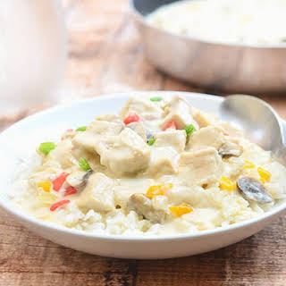

Chicken a la King

Description
Easy and elegant chicken dish. It's a great way to use leftover chicken or turkey. Green pepper and red pimientos make this a pretty dish to serve at Christmas or anytime. Serve over cooked rice, toast, or noodles. Can be made ahead and reheated.
Ingredients
- 1 (4.5 ounce) can mushrooms, drained, liquid reserved
- 1 green bell pepper, chopped
- ½ cup butter
- ½ cup all-purpose flour
- 1 teaspoon salt
- ¼ teaspoon ground black pepper
- 1 ½ teaspoons chicken bouillon powder
- 1 ½ cups milk
- 1 ¼ cups hot water
- 4 cooked, boneless chicken breast halves, chopped
- 4 ounces chopped pimento
Steps
- Cook and stir drained mushrooms and green pepper in butter or margarine over medium heat for 5 minutes. Remove from heat.
- Blend in flour, salt, and pepper. Cook over low heat, stirring constantly, until mixture is bubbly. Remove from heat.
- Stir in instant bouillon, milk, water, and reserved mushroom liquid. Heat to boiling, stirring constantly. Boil and stir for 1 minute.
- Stir in chicken and pimiento. Heat through.
HOME